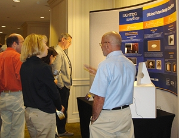

More than 270 attendees gathered in Portland, OR to participate in the "Voices for SSL Efficiency" Solid-State Lighting Workshop on July 9-11, 2008. The workshop, hosted by DOE, Bonneville Power Administration, Energy Trust of Oregon, Northwest Energy Efficiency Alliance, and Puget Sound Energy, was the third DOE meeting to explore how Federal, State, and private-sector organizations can work together to guide market introduction of high-performance SSL products. The workshop brought together a diverse gathering of participants – energy efficiency organizations, utilities, government, and industry – to share insights, ideas, and updates on the rapidly evolving SSL market.
More than 270 attendees gathered in Portland, OR to participate in the "Voices for SSL Efficiency" Solid-State Lighting Workshop on July 9-11, 2008. The workshop, hosted by DOE, Bonneville Power Administration, Energy Trust of Oregon, Northwest Energy Efficiency Alliance, and Puget Sound Energy, was the third DOE meeting to explore how Federal, State, and private-sector organizations can work together to guide market introduction of high-performance SSL products. The workshop brought together a diverse gathering of participants – energy efficiency organizations, utilities, government, and industry – to share insights, ideas, and updates on the rapidly evolving SSL market.
SSL Tutorials Address Technology Basics
On Day 1, DOE SSL Portfolio Manager James Brodrick kicked off the workshop with an overview of DOE market introduction activities. Brodrick provided a brief overview of DOE pathways to market, including CALiPER testing, GATEWAY demonstrations, ENERGY STAR, Technical Information Network, and more.
Steven DenBaars from the University of California, Santa Barbara, followed with a tutorial on the physics behind how LEDs work, and how they differ from conventional light sources. He described the difference between lamp efficiency and system efficiency, noting that commercial LED fixtures are unable to achieve laboratory device efficiency levels due to efficiency roll-off or "droop," fixture design issues, heat sink realities, and losses due to scaling up for mass production.
Kelly Gordon of Pacific Northwest National Laboratory (PNNL) followed with a tutorial on LED applications, explaining that LED technology advances so rapidly that next generation LED products are introduced about every six months. Gordon then offered a snapshot of four LED lighting applications, detailing the current status, product performance, and a checklist of "what to consider" when evaluating downlights, undercabinet, desk/task, and outdoor lighting products.
The third tutorial, presented by Mike Grather of the Luminaire Testing Laboratory, focused on LED measurement and how it differs from traditional methods for measuring lighting performance. Grather explained the importance of photometric testing for LED products using absolute photometry, rather than relative photometry, because it allows more accurate measurement of the complete LED device performance vs. bare lamp performance.
Demonstrations Pave the Way
Day 2 of the workshop began with a keynote by Alan Ruud of Beta LED, who provided insights on the rapid evolution of LED lighting applications – from architectural applications to outdoor and now indoor applications. He highlighted several applications where LEDs have been quick winners, including tunnels, streets, parking lots, and garages. Ruud advised the audience on evaluating SSL products, recommending they look for photometric performance data (using the new LM-79 standard), energy consumption (efficacy) data, aesthetics, and a warranty you can trust. Ruud declared LEDs are "ready," but warned that it is "incumbent on everyone to not settle for a luminaire that does not perform to your standards."
Bruce Kinzey of PNNL began Session 1 with an overview of the DOE GATEWAY demonstration process, and detailed results from recent installations. He then previewed several new GATEWAY demonstration projects getting under way, including roadway lighting for the St. Anthony Falls Bridge in Minneapolis; freezer case lighting for Albertson Foods; downlights and undercabinet luminaires for Northwest Green Builder homes; and multiple parking lot applications through the DOE Retailer Energy Alliance.
Tyson Cook of Energy Solutions then shared performance data and economic results from the DOE GATEWAY demonstration of street lighting in Oakland, CA. The study concluded that LEDs were a viable alternative for 100 watt high pressure sodium fixtures, offering an estimated annual cost savings of 44-50% and greater perceived visibility. Cook noted that high upfront costs can lead to long simple paybacks, which are sensitive to the host site's estimated maintenance savings.
Daryl DeJean of Emerging Technologies Associates, Inc. next presented on the topic of planning for SSL demonstrations. He offered insights on the customer perspective and needs: accurate product data sheets and technical information (e.g., independent test results or ENERGY STAR qualification where applicable), material safety data sheets, testimonials and other assessment results, warranties, and a local installation to tour (where possible). He concluded by urging attendees to "keep the explanations customer-focused, using their lingo."
Implementing ENERGY STAR for SSL
Session 2 focused on the DOE ENERGY STAR® Program for SSL. Richard Karney, U.S. Department of Energy, shared DOE's concerns about the competing ENERGY STAR criteria for residential luminaires issued by the U.S. Environmental Protection Agency (EPA), stating that significant conflict/overlap exists between the two criteria. Karney stated, "There can only be one ENERGY STAR criteria for SSL, and the DOE criteria stand as the valid guidance for SSL." Karney noted that DOE is working to resolve the issue as quickly as possible. Karney then reviewed the current status and timeline for the first ENERGY STAR SSL products to arrive on the market starting September 30, 2008.
Derek Greenauer of D&R International next presented details on how to become an ENERGY STAR partner. A manufacturer's guide and online product qualification process will be available this summer. He also discussed testing requirements, quality assurance, and other program elements designed to provide end-users with a high level of confidence in labeled products.
Jeff McCullough of PNNL wrapped up the session with details on DOE's plans to keep pace with rapid technology advances. DOE's transitional, two-phased approach allows early participation of a limited range of Category A products. Category B sets more rigorous performance targets with an eye toward future products. McCullough shared DOE plans to add new product applications to Category A, as well as a proposed ratcheting of efficacy targets over time to keep pace with technology improvements. DOE will engage industry for feedback on the new applications and ratcheting plan in the coming months.
Understanding LED Measurement and Testing
In the afternoon, Mike Grather of Luminaire Testing Laboratory took the podium to share more on LED measurement, and reviewed new test procedures for measuring LEDs: ANSI C78.377-2008, Specifications for the Chromaticity of Solid-State Lighting Products; IES LM-79-2008, Electrical and Photometric Measurements of Solid-State Lighting Products; and IES LM-80, Method for Measuring Lumen Maintenance for SSL Light Sources (expected in Summer 2008).
Mia Paget of PNNL followed with the latest results and analysis from DOE's CALiPER program. Round 5 included testing of recessed downlights, replacement lamps, task lights, and several outdoor applications. With the completion of Round 5, DOE has tested more than 100 products. Paget noted that while "some products do perform well, most products on the market today don't." She counseled the audience to understand and request SSL luminaire testing when evaluating SSL products.
Addressing Product Commercialization Issues
Session 4, moderated by Fred Gordon of Energy Trust of Oregon, addressed product commercialization issues and barriers slowing widespread adoption of SSL. Fred Welsh of Radcliffe Advisors introduced a new SSL Quality Advocates initiative, developed by DOE and the Next Generation Lighting Industry Alliance to improve the quality of SSL products and prevent a recurrence of the CFL market introduction mistakes. Initial efforts involve the development of guidelines for reporting product performance and a Lighting Facts™ label, which was unveiled for attendees. A Pledge program will be unveiled in early 2009, designed to build a growing community of SSL Quality Advocates throughout the supply chain who either agree to follow the guidelines and use the label, or to look for and use products that bear the label.
 Randy Burkett of Randy Burkett Lighting Design reviewed perspectives from the Lighting Designer Roundtable (PDF 1.1 MB) hosted by DOE, the International Association of Lighting Designers (IALD), and Illuminating Engineering Society (IES) in March 2008. He and other designers at the Roundtable see a strong future for SSL as a design tool, but Burkett cautions that "specifiers should consider an SSL system's strengths and weaknesses in each application, as you would for any other light source or luminaire." Burkett also discussed the DOE/IES Design Guide for SSL, unveiled in draft form at the Roundtable for review and comment. The Guide provides technical information on LED performance and design guidance for specific applications according to space and building type. The final Guide is expected to be issued by IES in late 2008.
Randy Burkett of Randy Burkett Lighting Design reviewed perspectives from the Lighting Designer Roundtable (PDF 1.1 MB) hosted by DOE, the International Association of Lighting Designers (IALD), and Illuminating Engineering Society (IES) in March 2008. He and other designers at the Roundtable see a strong future for SSL as a design tool, but Burkett cautions that "specifiers should consider an SSL system's strengths and weaknesses in each application, as you would for any other light source or luminaire." Burkett also discussed the DOE/IES Design Guide for SSL, unveiled in draft form at the Roundtable for review and comment. The Guide provides technical information on LED performance and design guidance for specific applications according to space and building type. The final Guide is expected to be issued by IES in late 2008.
Scott Matthews of Carnegie Mellon University then presented an overview of a new DOE study to look at energy and environmental aspects related to the manufacture, use, and disposal (or recycle) of SSL systems. Life cycle analysis is seen as an important tool for understanding how SSL will impact on energy consumption, pollution prevention, and environmental decision-making. Currently the study is in planning stages, and Matthews invited attendees to provide input on relevant data sources and issues/concerns to address.
National Competitions Promote Market Adoption
Day 3 began with a session on new national competitions that heighten awareness and adoption of high-performance SSL products. James Brodrick from DOE introduced the L Prize Competition, launched at LIGHTFAIR in May 2008. L Prize challenges industry to develop replacement technologies for 60 W incandescent lamps and PAR 38 halogen lamps. Winners will be eligible for cash prizes, opportunities for federal purchasing agreements, utility programs, and other incentives. Brodrick actively invited efficiency program partners to join the wave of support led by the four California utilities involved in the competition planning and execution: Pacific Gas & Electric, Sacramento Municipal Utility District, San Diego Gas & Electric, and Southern California Edison. Efficiency Vermont and Nevada Power are the most recent L Prize Partners to join.
Gregg Ander of Southern California Edison (SCE) then presented "The Role of Utilities in Leveraging the L Prize Competition." Ander noted that California increased energy efficiency funding for 2009-2011 to $3 Billion, while increasing energy efficiency goals, which are now at 2.5 Billion kWh per year statewide. According to Ander, the energy impact for efficiency in lighting is huge; more than 60% of SCE incentives go to lighting. He emphasized the opportunity for L Prize Partners to promote the winning products through incentives that will accelerate the rate of market adoption and reduce product costs via large volumes.
Ruth Taylor of PNNL provided an update on Lighting for Tomorrow, a residential lighting design competition sponsored by DOE, the American Lighting Association (ALA), and the Consortium for Energy Efficiency. The 2008 winners will be announced at the ALA Conference in September. Taylor then introduced a new commercial luminaires design competition called Next Generation Luminaires, sponsored by DOE, IALD, and IES. The goal of both of these competitions is to spotlight product manufacturers who are "getting it right" and to recognize and promote high quality, energy-efficient luminaires.
Preparing for SSL
Session 6, moderated by Marc Ledbetter of PNNL, focused on what utility and efficiency program managers can do now to prepare for high-performance SSL products. Mary Matteson Bryan and David Alexander, representing Pacific Gas & Electric (PG&E), explained the legislative and efficiency drivers for PG&E's interest in SSL. PG&E's Emerging Technologies Program identifies and assesses emerging technologies to accelerate market penetration. PG&E has planned incentives for refrigerated case lighting and recessed downlights, and is looking hard at street and area lighting, parking garage lighting (a good application for achieving peak demand savings), and MR-16 lighting (probably the most requested incentive). According to Alexander, "New incentives are on the way for products that meet qualifying standards, which help to ensure customer satisfaction and persistent, reliable energy savings."
Gabe Arnold of Efficiency Vermont presented perspectives from his statewide organization, which is charged with reducing electricity use and administering energy efficiency programs for 20 of 21 Vermont electric utilities. Arnold stated that Vermont is working to find a balance between caution and meeting market demands – his customers "cannot wait to try LEDs." Efficiency Vermont carefully selects products for demonstrations, looking at CALiPER test results, LM-79 test data, product samples, and IES file data. He shared examples from a number of recent installations, including a deli, an auto dealer, and a retail restaurant chain, as well as a list of current products supported, including downlights, PAR and MR16 replacements (spotlight applications only), outdoor fixtures, and refrigerated case lighting.
Charlie Grist of the Northwest Power and Conservation Council next discussed balancing risks and rewards, and shared an electric utility system perspective on the economic issues of implementing SSL technologies. Grist evaluated costs and benefits of several SSL technologies, comparing SSL to traditional sources on the basis of performance, cost-effectiveness, and "the unknowns." He summarized that "mileage may vary" – costs and benefits must be carefully calculated, one must carefully consider alternatives, and that it is essential that the audience "do their homework."
Todd Starnes of Puget Sound Energy (PSE) then shared strategies used by PSE to support new technology. PSE seeks out product applications with defensible (and enormous) cost-effective savings, and then utilizes its relationships with builders, retailers, vendors, and trade organizations to promote new products. Starnes noted that "the CFL gravy train is reaching the end of the line," and new technologies like SSL are needed to meet PSE energy efficiency targets.
Jeff Harris of the Northwest Energy Efficiency Alliance (NEEA), a four-state regional collaborative, presented a frank discussion entitled "Getting Ready for ENERGY STAR." He began by referencing the market confusion caused by the EPA release of RFL v4.2, in conflict with the DOE SSL v1.0, and stated "NEEA will not recommend any incentives for residential SSL until this is resolved." Harris recommended focusing on incenting applications that take advantage of the unique properties of SSL, noting that street and area lighting and display case lighting may be the best near-term opportunities. He concluded with the caution: "Don't incent anything that would actually add load!"
My Ton of PNL closed Session 6 with an explanation of how utilities and efficiency organizations can get involved with DOE's GATEWAY Demonstration program and Registry. GATEWAY partners benefit from the shared opportunity to evaluate SSL product performance and gain experience with SSL daily operation. Demonstration teams typically consist of a product manufacturer, a host site, and an energy efficiency organization or local utility, with DOE acting as matchmaker and mentor for the teams. Ton also unveiled plans for the development of a Registry for GATEWAY and "Do It Yourself" demonstrations. Information on DOE demonstration methodology and report templates will soon be available for download from the DOE SSL website.
Brodrick concluded the three-day workshop with a reminder to participants to join the wave of opportunities to partner and participate with DOE, and shape the future of lighting in the U.S. For ongoing updates on DOE SSL activities and events, register for SSL UPDATES at http://www.eere.energy.gov/buildings/ssl/.